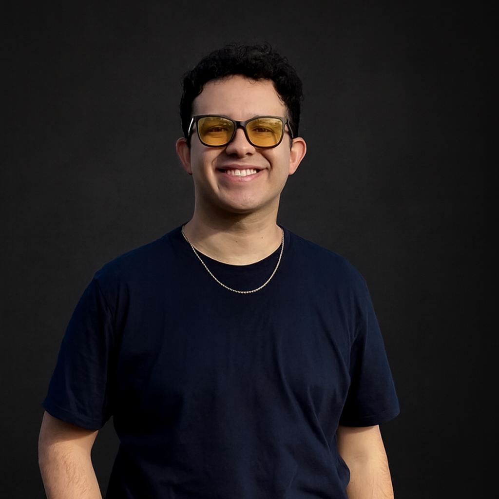

Home
About me
Hi I am Kevin Flores, I am 28 years old, I am a programmer web developer with experience in creating dynamic and responsive websites. I have a little business that I owe, focused on web development, with a principal focus on e-commerce dynamic sites. I am married with a beautiful wife called Lourdes, we've got married almost 4 years ago. I love playing videogames on my PS5 and go to GYM. My goal is improuving my skills in web development and become a better programmer every day.
Student photo

Web Certificate Course
The total credits for course listed above is 6